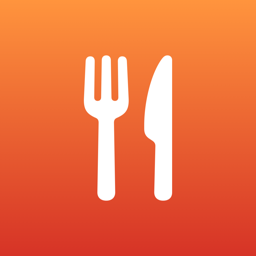

What's for DinnerSupport
Questions, problems or ideas? Email support@squishybyteworks.com. If a recipe page doesn't import, please include the link. For step-by-step instructions, see How to use What's for Dinner.
Saving a recipe from Safari
Open the recipe, tap the Share button, then tap What's for Dinner. If you don't see it, scroll to the end of the row of apps, tap More, and turn on What's for Dinner. The recipe appears in the app the next time you open it.
Pasting a link
Copy the recipe's link in any app. In What's for Dinner, tap + and choose Paste Recipe Link, tap Paste, then Get Recipe. Check the preview and tap Save.
A recipe didn't import
Some sites don't publish their recipe in a format apps can read. You can still save the link and type the recipe in. If a site asks you to confirm you're human, finish the check on the page that appears and the recipe will load.
Cooking in landscape
Open a recipe and turn your iPhone sideways to see ingredients and steps side by side. Tap an ingredient to check it off and tap a step to keep your place. On iPad, they're side by side in both orientations.
Shopping lists
On the Meal Plan tab, tap the cart button to build a list from the days you pick, or tap Add to List on any recipe. Matching ingredients are combined and sorted by aisle. Long-press an item to move it to a different aisle.
Free trial and unlock
Everything is free for 7 days. After that, a one-time purchase unlocks adding recipes, meal planning and shopping lists for good. It's not a subscription, and recipes you've saved stay readable either way. Already bought it? Go to Settings → Restore Purchases, signed in with the same Apple Account.